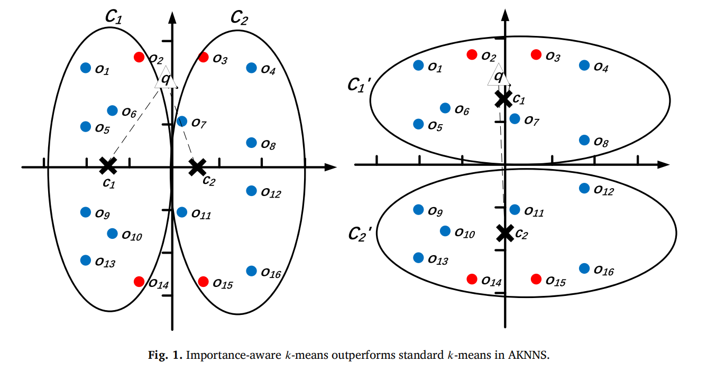

关于我About Me
研究与实践Research and practice
我目前是黑龙江大学计算机科学与技术专业本科生，研究兴趣集中在具身智能领域，主要关注VLA和world action models（WAM）。
I am an undergraduate student in Computer Science and Technology at Heilongjiang University. My research interests center on embodied intelligence, with a focus on VLA and world action models (WAM).
我希望让智能体不仅能够理解视觉与语言，还能在潜在空间中预测环境变化、规划动作，并通过真实与仿真数据闭环稳定地作用于物理世界。现阶段的研究经历覆盖模型压缩、知识蒸馏、机器人控制、仿真环境和近似最近邻搜索。
I am interested in agents that go beyond visual-language understanding to predict environmental dynamics, plan actions in latent space, and interact reliably with the physical world through real-to-simulation data loops. My current experience spans model compression, knowledge distillation, robot control, simulation, and approximate nearest-neighbor search.
研究取向：把复杂系统拆成可观察、可推理、可验证的环节，再把它们带回真实世界。
Research principle: turn complex systems into observable, reasoned, and verifiable parts, then bring them back to the physical world.
最新动态News
-
完成国防科技大学科研实习。围绕轮式机器人完成 ROS2 真机控制、PyBullet 仿真夹取及真实/仿真交互数据采集。
Completed a research internship at the National University of Defense Technology. Worked on ROS2 control, PyBullet grasping simulation, and real/sim interaction data collection for a wheeled robot.
-
LACK 完成 SCI 收录检索。论文发表于 Information Sciences 735，Article 123077。
LACK was indexed by SCI. The paper was published in Information Sciences 735, Article 123077.
-
完成电子科技大学深圳科研实习。开展多模态 VLA 的跨模态知识迁移、VLM 拆分与高效压缩研究。
Completed a research internship at UESTC Shenzhen. Studied cross-modal knowledge transfer, VLM decoupling, and efficient compression for multimodal VLA agents.
-
LACK 在线发表。研究学习增强策略下的自适应聚类与近似最近邻搜索。
LACK was published online. The work studies adaptive clustering and approximate nearest-neighbor search with a learning-augmented policy.
科研经历Research Experience
-
2026.06 - 2026.07
国防科技大学 · 具身智能操控与仿真数据闭环
National University of Defense Technology · Embodied Control and Sim-to-Real Data Loop
指导教师：朱晨阳老师
Mentor: Chenyang Zhu
ROS2 底盘运动控制、传感器信息读取与真机调试；PyBullet 夹取仿真环境；采集真实与仿真交互数据，为后续 VLA 微调与数据闭环研究提供基础。
Integrated ROS2 chassis control, sensor access, and real-robot debugging; built a PyBullet grasping environment; and collected real/sim interaction data for later VLA fine-tuning and closed-loop research.
-
2025.10 - 2026.04
电子科技大学深圳研究院 · 多模态 VLA 模型压缩
UESTC Shenzhen · Multimodal VLA Model Compression
指导教师：何祥坤老师
Mentor: Xiangkun He
围绕 SimLingo / ReCogDrive 完成 VLM 权重拆分与重组，使用 Logit KD + Vision KD 蒸馏输出分布与视觉特征，并重接 Action Head 联合微调。CE Loss 从 3.1851 降至 2.0031，Perplexity 从 24.17 降至 7.41。
Decoupled and reorganized VLM weights from SimLingo / ReCogDrive-related models, then used Logit KD + Vision KD and action-head fine-tuning. CE Loss decreased from 3.1851 to 2.0031, and Perplexity from 24.17 to 7.41.
论文与专利Publications and Patent

Information Sciences, Volume 735, Article 123077, 2026 SCI
第二作者。负责实验流程，包括基线复现、对比实验、消融实验、超参数与可扩展性分析，以及实验部分写作。
Second author. Contributed the experimental pipeline, including baseline reproduction, comparative and ablation studies, hyperparameter and scalability analysis, and writing the experimental section.
发明专利 · 审查中Invention Patent · Under Review
一种基于学习增强框架的自适应 K-Means 聚类方法。第一发明人。
An Adaptive K-Means Clustering Method Based on a Learning-Augmented Framework. First inventor.

竞赛荣誉Honors
- 2025 · ACM / ICPC 亚洲区域赛（南京）铜奖ACM / ICPC Asia Regional Contest, Nanjing - Bronze Medal
- 2025 · CCPC 全国邀请赛（郑州）铜奖CCPC National Invitational Contest, Zhengzhou - Bronze Medal
- 2025 · CCPC 东北地区邀请赛铜奖CCPC Northeast Invitational Contest - Bronze Medal
- 2025 · CCCC 团体程序设计天梯赛全国总决赛银奖CCCC Collegiate Computer Programming Contest National Finals - Silver Medal